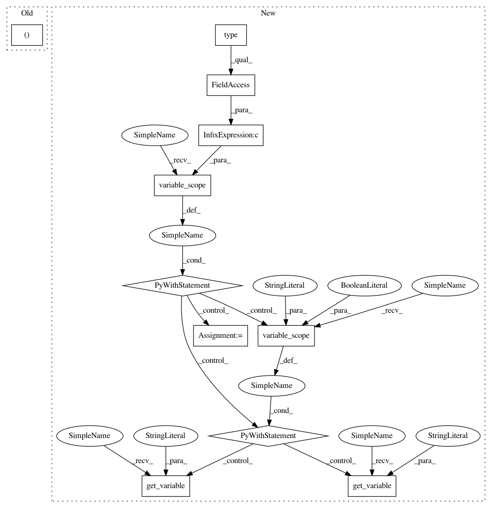

4acd61442955baa2509fdc2961284c9d2a986f34,tflearn/layers/recurrent.py,GRUCell,__call__,#GRUCell#Any#Any#Any#,697
Before Change
r, u = array_ops.split(1, 2, r_u)
r, u = self.activation(r), self.activation(u)
self.W[1], self.b[1], c = _linear([inputs, r * state], self._num_units,
self.bias, self.W[1],
self.b[1], self.W_init,
trainable=self.trainable,
After Change
def __call__(self, inputs, state, scope=None):
Gated recurrent unit (GRU) with nunits cells.
with tf.variable_scope(scope or type(self).__name__): // "GRUCell"
with tf.variable_scope("Gates"): // Reset gate and update gate.
// We start with bias of 1.0 to not reset and not update.
r, u = array_ops.split(1, 2, _linear([inputs, state],
2 * self._num_units, True, 1.0, self.weights_init,
self.trainable, self.restore, self.reuse))
r, u = self._inner_activation(r), self._inner_activation(u)
with tf.variable_scope("Candidate"):
c = self._activation(
_linear([inputs, r * state], self._num_units, True, 0.,
self.weights_init, self.trainable, self.restore,
self.reuse))
new_h = u * state + (1 - u) * c
self.W, self.b = list(), list()
// Retrieve RNN Variables
with tf.variable_scope("Linear/Gates", reuse=True):
self.W.append(tf.get_variable("Matrix"))
self.b.append(tf.get_variable("Bias"))
with tf.variable_scope("Linear/Candidate", reuse=True):
self.W.append(tf.get_variable("Matrix"))
self.b.append(tf.get_variable("Bias"))
return new_h, new_h
// --------------------
In pattern: SUPERPATTERN
Frequency: 3
Non-data size: 11
Instances
Project Name: tflearn/tflearn
Commit Name: 4acd61442955baa2509fdc2961284c9d2a986f34
Time: 2016-07-01
Author: aymeric.damien@gmail.com
File Name: tflearn/layers/recurrent.py
Class Name: GRUCell
Method Name: __call__
Project Name: tflearn/tflearn
Commit Name: 4acd61442955baa2509fdc2961284c9d2a986f34
Time: 2016-07-01
Author: aymeric.damien@gmail.com
File Name: tflearn/layers/recurrent.py
Class Name: GRUCell
Method Name: __call__
Project Name: tflearn/tflearn
Commit Name: 4acd61442955baa2509fdc2961284c9d2a986f34
Time: 2016-07-01
Author: aymeric.damien@gmail.com
File Name: tflearn/layers/recurrent.py
Class Name: BasicLSTMCell
Method Name: __call__
Project Name: tflearn/tflearn
Commit Name: 4acd61442955baa2509fdc2961284c9d2a986f34
Time: 2016-07-01
Author: aymeric.damien@gmail.com
File Name: tflearn/layers/recurrent.py
Class Name: BasicRNNCell
Method Name: __call__